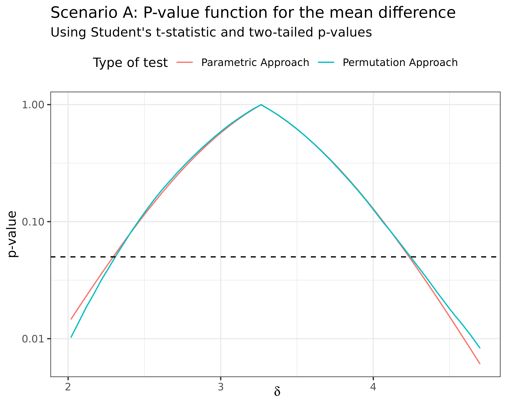
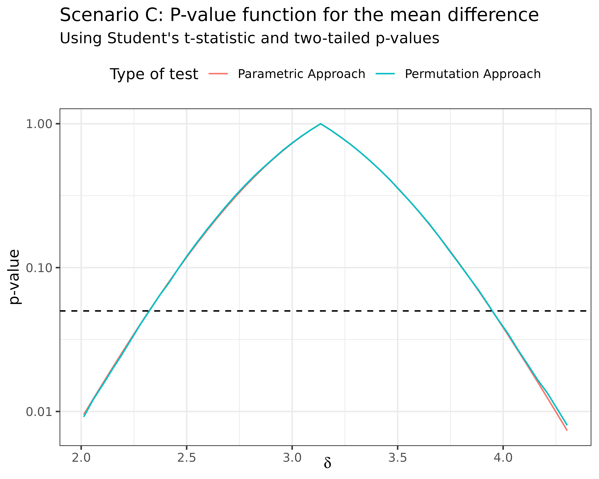

The permutation framework is perfectly suited for making inference as it allows one to perform point estimation, confidence regions and hypothesis tests under mild assumptions about the collected data and no distributional assmuption. In this article, we briefly illustrate how each of these aspects can be treated from a permutation point of view using the flipr package. This package has been written and is intended as a low-level implementation of the permutation framework in the context of statistical inference. The mathematical object behind the scene is the so-called plausibility function, sometimes called p-value function. This article explains what the plausbility function is and shows how it can be easily computed using the permutation framework with flipr. We illustrate the shape of the plausibility function using both Gaussian and Gamma distributions.
Let us work on a very classic toy example. Suppose that we are interested in studying the difference in means of two populations. We will generate:
n1 <- 10
n2 <- 10
mu1 <- 1
mu2 <- 4
sd1 <- 1
sd2 <- 1
B <- 100000We will consider three different scenari:
Both populations follow Gaussian distributions.
Both populations follow Gamma distributions.
The first population follows a Gaussian distribution while the second population follows a Gamma distribution.
For each scenario, the goal is to make inference on the difference between the means of the two distributions. In other words, the parameter of interest is \(\delta = \mu_2 - \mu_1\).
The plausibility function for the mean difference is a curve that represents the variation of the \(p\)-value of a test in which the null hypothesis is \(\delta = \delta_0\) as a function of \(\delta_0\) (Martin 2017; Fraser 2019; Infanger and Schmidt-Trucksäss 2019).
With flipr, it is easy to trace such a plausibility function. Three ingredients are required alongside the data to instantiate such a function:
In the context of null hypothesis testing, we consider the null hypothesis \(H_0: \mu_y - \mu_x = \delta\). We can use a permutation scheme to approach the \(p\)-value if the two samples are exchangeable under \(H_0\). This means that we need to transform for example the second sample to make it exchangeable with the first sample under \(H_0\). In this simple example, this can be achieved as follows. Let \(X_1, \dots, X_{n_x} \sim \mathcal{N}(\mu_x, 1)\) and \(Y_1, \dots, Y_{n_y} \sim \mathcal{N}(\mu_y, 1)\). We can then transform the second sample as \(Y_i \longleftarrow Y_i - \delta\).
We can define a proper function to do this, termed the null specification function, which takes two input arguments:
y which is a list storing the data points in the second sample;parameters which is a numeric vector of values for the parameters under investigation (here only \(\delta\) and thus parameters is of length \(1\) with parameters[1] = delta).In our simple example, it boils down to:
null_spec <- function(y, parameters) {
purrr::map(y, ~ .x - parameters[1])
}Next, we need to decide which test statistic(s) we are going to use for performing the test. Here, we are only interested in one parameter, namely the mean difference \(\delta\). Since the two samples share the same variance, we can use for example the \(t\)-statistic with a pooled estimate of the common variance.
This statistic can be easily computed using stats::t.test(x, y, var.equal = TRUE)$statistic. However, we want to extend its evaluation to any permuted version of the data. Test statistic functions compatible with flipr should have at least two mandatory input arguments:
data which is either a concatenated list of size \(n_x + n_y\) regrouping the data points of both samples or a distance matrix of size \((n_x + n_y) \times (n_x + n_y)\) stored as an object of class dist.indices1 which is an integer vector of size \(n_x\) storing the indices of the data points belonging to the first sample in the current permuted version of the data.A flipr-compatible version of the t-statistic is already implemented in flipr and ready to use as stat_student or its alias stat_t. Here, we are only going to use the \(t\)-statistic for this example, but we might be willing to use more than one statistic for a parameter or we might have several parameters under investigation, each one of them requiring a different test statistic. We therefore group all the test statistics that we need into a single list:
stat_functions <- list(stat_t)Finally we need to define a named list that tells flipr which test statistics among the ones declared in the stat_functions list should be used for each parameter under investigation. This is used to determine bounds on each parameter for the plausibility function. This list, often termed stat_assignments, should therefore have as many elements as there are parameters under investigation. Each element should be named after a parameter under investigation and should list the indices corresponding to the test statistics that should be used for that parameter in stat_functions. In our example, it boils down to:
stat_assignments <- list(delta = 1)In flipr, the plausibility function is implemented as an R6Class object. Assume we observed two samples stored in lists x and y, we therefore instantiate a plausibility function for this data as follows:
pf <- PlausibilityFunction$new(
null_spec = null_spec,
stat_functions = stat_functions,
stat_assignments = stat_assignments,
x, y
)Now, assume we want to test the following hypotheses:
\[ H_0: \delta = 0 \quad \mbox{v.s.} \quad H_1: \delta \ne 0. \]
We use the $get_value() method for this purpose, which essentially evaluates the permutation \(p\)-value of a two-sided test by default:
pf$get_value(0)It is possible to evaluate one-sided p-values as well by changing the $alternative field through the $set_alternative() method, which accepts two_tail, left_tail and right_tail values.`
By default, the number of sampled permutations is 1000L. It is accessible through the $nperms field and can be changed via the $set_nperms() method.
Let us instantiate the plausibility for the data simulated under scenario A:
pfa <- PlausibilityFunction$new(
null_spec = null_spec,
stat_functions = stat_functions,
stat_assignments = stat_assignments,
a1, a2
)
pfa$set_nperms(B)We can compute a point estimate of the mean difference and store it inside the plausibility function class via the $set_point_estimate() method:
The computed value can then be accessed via the $point_estimate field:
pfa$point_estimate
#> delta
#> 3.264987or by displaying the list of parameters under investigation which is stored in the $parameters field.
pfa$parameters#> $delta
#> Delta (quantitative)
#> Range: [?, ?]
#> Point estimate: 3.26In this list, one can see that parameters come with an unknown range by default. We can however compute their bounds by defining a maximum confidence level through the $set_max_conf_level() method of the PlausibilityFunction class. When a plausibility function is instantiated, the default value for the $max_conf_level field is \(0.99\). To set parameter bounds automatically, use the $set_parameter_bounds() method:
pfa$set_parameter_bounds(
point_estimate = pfa$point_estimate,
conf_level = pfa$max_conf_level
)We can now inspect again the list of parameters under investigation to see the updated bounds:
pfa$parameters
#> $delta
#> Delta (quantitative)
#> Range: [2.02, 4.7]
#> Point estimate: 3.26Once bounds are known for each parameter, it becomes possible to generate a grid for later evaluating the plausibility function. This is done through the $set_grid() method as follows:
pfa$set_grid(
parameters = pfa$parameters,
npoints = 50L
)We can then take a look at the newly created grid:
pfa$grid#> # A tibble: 51 × 1
#> delta
#> <dbl>
#> 1 2.02
#> 2 2.07
#> 3 2.12
#> 4 2.17
#> 5 2.22
#> 6 2.27
#> 7 2.32
#> 8 2.37
#> 9 2.42
#> 10 2.47
#> # … with 41 more rowsWe can go a step further and evaluate the plaubility function on that grid using the $evaluate_grid() method as follows:
pfa$evaluate_grid(grid = pfa$grid)Again, we can then take a look at the updated grid:
pfa$grid
#> # A tibble: 51 × 2
#> delta pvalue
#> <dbl> <dbl>
#> 1 2.02 0.0102
#> 2 2.07 0.0137
#> 3 2.12 0.0185
#> 4 2.17 0.0240
#> 5 2.22 0.0317
#> 6 2.27 0.0405
#> 7 2.32 0.0520
#> 8 2.37 0.0659
#> 9 2.42 0.0834
#> 10 2.47 0.104
#> # … with 41 more rowsWe can add to this grid the p-value computed from the t-test assuming normality of the data:
dfa <- pfa$grid |>
mutate(
pvalue_alt = delta %>%
map_dbl(~ {
t.test(
x = a2,
y = a1,
alternative = "two.sided",
mu = .x,
var.equal = TRUE
)$p.value
})
) %>%
select(
delta,
`Parametric Approach` = pvalue_alt,
`Permutation Approach` = pvalue
) %>%
pivot_longer(-delta)
dfa %>%
filter(value > 1e-3) %>%
ggplot(aes(delta, value, color = name)) +
geom_line() +
geom_hline(
yintercept = 0.05,
color = "black",
linetype = "dashed"
) +
labs(
title = "Scenario A: P-value function for the mean difference",
subtitle = "Using Student's t-statistic and two-tailed p-values",
x = expression(delta),
y = "p-value",
color = "Type of test"
) +
theme_bw() +
theme(legend.position = "top") +
scale_y_log10()
However, keep in mind that the parametric Student’s \(t\)-test is only valid for Gaussian data or for large samples invoking the central limit theorem. When sample sizes are low and samples are not drawn from Gaussian distributions, only the permutation approach is valid. When both samples come from non-Gaussian data (here Gamma-distributed samples) and sample sizes are low (here \(10\) for each sample), we get the following \(p\)-value functions (cutting below \(0.001\) since the usual range of useful \(p\)-values is from \(0.01\) and above):
pfb <- PlausibilityFunction$new(
null_spec = null_spec,
stat_functions = stat_functions,
stat_assignments = stat_assignments,
b1, b2
)
pfb$set_nperms(B)
pfb$set_point_estimate(mean(b2) - mean(b1))
pfb$set_parameter_bounds(
point_estimate = pfb$point_estimate,
conf_level = pfb$max_conf_level
)
pfb$set_grid(
parameters = pfb$parameters,
npoints = 50L
)
pfb$evaluate_grid(grid = pfb$grid)
dfb <- pfb$grid |>
mutate(
pvalue_alt = delta %>%
map_dbl(~ {
t.test(
x = b2,
y = b1,
alternative = "two.sided",
mu = .x,
var.equal = TRUE
)$p.value
})
) %>%
select(
delta,
`Parametric Approach` = pvalue_alt,
`Permutation Approach` = pvalue
) %>%
pivot_longer(-delta)
dfb %>%
filter(value > 1e-3) %>%
ggplot(aes(delta, value, color = name)) +
geom_line() +
geom_hline(
yintercept = 0.05,
color = "black",
linetype = "dashed"
) +
labs(
title = "Scenario B: P-value function for the mean difference",
subtitle = "Using Student's t-statistic and two-tailed p-values",
x = expression(delta),
y = "p-value",
color = "Type of test"
) +
theme_bw() +
theme(legend.position = "top") +
scale_y_log10()The parametric \(p\)-value function is clearly shifted in the decreasing part on the right of the plot.
When only one of the samples come from non-Gaussian data (here the second sample is Gamma-distributed and sample sizes are low (here \(10\) for each sample), we get the following \(p\)-value functions (cutting below \(0.001\) since the usual range of useful \(p\)-values is from \(0.01\) and above):
pfc <- PlausibilityFunction$new(
null_spec = null_spec,
stat_functions = stat_functions,
stat_assignments = stat_assignments,
c1, c2
)
pfc$set_nperms(B)
pfc$set_point_estimate(mean(c2) - mean(c1))
pfc$set_parameter_bounds(
point_estimate = pfc$point_estimate,
conf_level = pfc$max_conf_level
)
pfc$set_grid(
parameters = pfc$parameters,
npoints = 50L
)
pfc$evaluate_grid(grid = pfc$grid)
dfc <- pfc$grid |>
mutate(
pvalue_alt = delta %>%
map_dbl(~ {
t.test(
x = c2,
y = c1,
alternative = "two.sided",
mu = .x,
var.equal = TRUE
)$p.value
})
) %>%
select(
delta,
`Parametric Approach` = pvalue_alt,
`Permutation Approach` = pvalue
) %>%
pivot_longer(-delta)
dfc %>%
filter(value > 1e-3) %>%
ggplot(aes(delta, value, color = name)) +
geom_line() +
geom_hline(
yintercept = 0.05,
color = "black",
linetype = "dashed"
) +
labs(
title = "Scenario C: P-value function for the mean difference",
subtitle = "Using Student's t-statistic and two-tailed p-values",
x = expression(delta),
y = "p-value",
color = "Type of test"
) +
theme_bw() +
theme(legend.position = "top") +
scale_y_log10()
The situation seems less critical here when only one sample is non-Gaussian but this is only one simulation using a Gamma-distributed second sample. The bias could be more important for other distributions.
Another issue with the parametric approach is that it is very limited in the type of data that one can use. The parametric \(t\)-test for instance is only meant for real-valued data. It will not be applicable to multivariate data or functional data or topological data or network-valued data or any other type of data that is not representable as real-valued data. This further motivates inference via permutation.
Getting access to the \(p\)-value function is key to making inference as point estimation, confidence regions and hypothesis tests all come as a by-product as we will show in the next sections.
One can obtain a point estimate of the parameter under investigation by searching which value of the parameter reaches the maximum of the \(p\)-value function (which is \(1\)). One can use the $set_point_estimate() method to do that:
pfa$set_point_estimate(overwrite = TRUE)The computed point estimate is then stored in the $point_estimate field and can be retrieved as:
pfa$point_estimate
#> delta
#> 3.264987One can obtain a confidence interval for the parameter under investigation by searching for which values of the parameter the \(p\)-value function remains above a pre-specified significance level \(\alpha\). This is achieved via the $set_parameter_bounds() method:
pfa$set_parameter_bounds(
point_estimate = pfa$point_estimate,
conf_level = 0.95
)
pfa$parameters
#> $delta
#> Delta (quantitative)
#> Range: [2.02, 4.7]
#> Point estimate: 3.26Extracting the \(p\)-value for a single hypothesis test in which the null hypothesis is \(H_0: \delta = \delta_0\) is immediate from the \(p\)-value function as it boils down to evaluating the \(p\)-value function in \(\delta_0\). Hence we can for instance test \(H_0: \delta = 3\) against the alternative \(H_1: \delta \ne 3\) using the following piece of code:
pfa$set_nperms(1000)
pfa$get_value(3)
#> [1] 0.5714259Fraser, D. A. S. 2019. “The P-Value Function and Statistical Inference.” The American Statistician 73 (sup1): 135–47. https://doi.org/10.1080/00031305.2018.1556735.
Infanger, Denis, and Arno Schmidt-Trucksäss. 2019. “P Value Functions: An Underused Method to Present Research Results and to Promote Quantitative Reasoning.” Statistics in Medicine 38 (21): 4189–97. https://doi.org/10.1002/sim.8293.
Martin, Ryan. 2017. “A Statistical Inference Course Based on P-Values.” The American Statistician 71 (2): 128–36. https://doi.org/10.1080/00031305.2016.1208629.